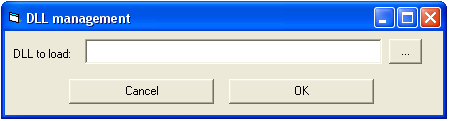

Komodia's Redirector installation guide
Quick installation guide
You can view the Komodia's Redirector quick installation guide incase you just want to install quickly without going into details.
Introduction
This manual covers the installation and usage of: Komodia's Redirector product.
Trial notice
Trial versions connect to our provisioning server to receive license status, the software is not sending out any information that the Redirector processes.
Components
The Redirector package includes the following components:
PCProxy Service
Acts both as the proxy that accepts connections from the redirected clients and as the server that handles configuration and control of the product. (exposes API using COM interface and can be programmed by any COM able language such as: VB, Delphi, VC)
LSP DLL
This module performs the actual redirection. It communicates with the PCProxy service to get the redirection rule set.
Komodia's Advanced LSP Installer
Used to install and uninstall the LSP DLL.
Installation
We advise to place the SDK not in system32/syswow64, if you decide to place the SDK there, the install process will not be supported.
Make sure that under Vista/7/8 you have “administrative privileges” and UAC privileges (On XP you must be the administrator). Also make sure that the current directory matches the install directory.
Under Vista and above you must install PCProxy as a service only.
Files needed for installation
- The names are different per version based on the branding request.
- The utility PCController.exe is a debug utility and should not be distributed.
Base SDK
Files needed are:
- PCProxy.exe - Main proxy service (Should be digitally signed).
- PCProxy.tlb - When using the anti AV module (Shouldn't be digitally signed).
- RegisterLSP.exe - LSP registration utility (Should be digitally signed).
- RegisterLSP64.exe - LSP registration utility for 64bit (Should be digitally signed).
- RegisterLSP.ini - LSP registration scenario configuration (Shouldn't be digitally signed).
- PCProxy.dll - LSP file (Should be digitally signed).
- PCProxy64.dll - LSP file for 64bit (Should be digitally signed).
WindowsApp
Under the main folder there's a folder called "WindowsApp", it contains a Windows app version of the console app (Service (when using the anti AV module), RegisterLSP and WFPInstaller).
SSL Digestor
Files needed are:
- KomodiaCertDLL.dll - Cert installer (Should be digitally signed).
- NSS DLL files: freebl3.dll, libnspr4.dll, libplc4.dll, libplds4.dll, nss3.dll, nssckbi.dll, nssdbm3.dll, nssutil3.dll, smime3.dll, softokn3.dll, sqlite3.dll, ssl3.dll (Shouldn't be digitally signed).
Kernel WD
Files needed are:
- kwdog.sys - 32bit WD driver (Should be digitally signed).
- kwdog.sys.win7 - 32bit WD driver for Windows 7 and above (need to remove the .win7 when deploying) (Should be digitally signed).
- kwdog64f.sys - 64bit WD driver (Should be digitally cross signed).
- kwdog64r.sys - 64bit WD driver (Should be digitally cross signed).
WFP
Files needed are:
- wfp.sys - 32bit WFP driver (Should be digitally signed).
- wfp64.sys - 64bit WFP driver (Should be digitally cross signed).
- WFPInstaller.exe - WFP installer utility (Should be digitally signed).
TDI
Files needed are:
- tdi.sys - 32bit TDI driver (Should be digitally signed).
- tdi64.sys - 64bit TDI driver (Should be digitally cross signed).
- TDIInstaller.exe - TDI installer utility (Should be digitally signed).
Exit code
The PCProxy and RegisterLSP and WFPInstall exit code can be 0 is everything went OK or any other value for failure.
PCProxy Service
To install the “PCProxy” as a service run:
PCProxy /Service
To install the “PCProxy” as an EXE (Will run when the LSP or VB console tries to communicate with it, this option is for XP only):
PCProxy /RegServer
PCProxy as a service
PCProxy can be started and stopped from either the services control panel or via “net” (OS utility).
To start the service - run from the command prompt:
net start pcproxy
To stop the service - run from the command prompt:
net stop pcproxy
Double installation
It's important to note that when installing the service it first deletes the settings (like uninstall) and then it installs itself.
Additional flags
Auto
This flag is used to set the PCProxy as a service with auto start:
PCProxy /Auto /Service
NoStop
This flag is used when you don't want PCProxy to accept service stop commands, keep in mind that the service can be still terminated using "end task" (to fully protect the SDK you can use Komodia's Watchdog.
PCProxy /NoStop /Service
Another variation with auto start:
PCProxy /Auto /NoStop /Service
NoSafeMode
This flag will disable registration of the service in safe mode.
PCProxy /NoSafeMode /Service
Checking if PCProxy installed as a service
You can check if the service exists or run:
PCProxy /IsInstalled
Exit code of 0 means that it's installed, any other value means it's not installed.
Checking if another Komodia's SDK is installed
You can check if another Komodia's SDK is installed (very rare):
PCProxy /IsOtherInstalled
Exit code of 0 means that it's installed, any other value means it's not installed.
In case there's another SDK exists because of legacy SDKs it is possible you'll get just one SDK, if this SDK is removed, you need to run this method again and see that the new SDKs do not exists as well.
Getting extra details
It is possible to tell the SDK to get information regarding the other SDK:
PCProxy /IsOtherDetails
Exit code of 0 means that it's installed, any other value means it's not installed.
In case there's another SDK, a file will be created in the running user's temp path (%temp%) called "sdk.txt" which contains two lines:
- Service name
- Service full path
In case there's another SDK exists because of legacy SDKs it is possible you'll get just one SDK, if this SDK is removed, you need to run this method again and see that the new SDKs do not exists as well.
Install location
Don't place PCProxy under system32 directory on Vista and above, because it will fail to install due to UAC.
PCProxy load sequence
After PCProxy is installed as a standalone or as a service, the first call from the LSP or GUI console will activate it. Of course, it is possible to set PCProxy to load automatically when installed as a service.
LSP DLL
32 bit
To install the “LSP DLL” run:
RegisterLSP –b –d PCProxy.dll
64 bit
Installing the LSP on 64bit OS involves installing once for 32bit and once for 64bit:
RegisterLSP –b –d PCProxy.dll RegisterLSP64 –b –d PCProxy64.dll
WFP
The WFP can be installed on Vista SP2 and above.
It's important to note that on a system you should install either the WFP or the LSP, but not both.
To install the WFP run:
WFPInstaller install
The installer will copy the right file (32bit or 64bit) to the drivers directory and will perform system installation of the WFP.
Differences between LSP and WFP installation
- PCProxy service must be installed before installing the WFP, and must be uninstalled after WFP was uninstalled.
- WFP is a single driver unlike the LSP which you need to install x32 and x64 on x64 OS, you install only one WFP.
- x64 WFP must be signed using authenticode cert, not all certs support this.
- Installer picks the right version (x32 or x64) based on the OS.
WFP advisor
The WFP installer can advise you on whether to install the WFP or LSP, based on the OS and existence of other security products that might prefer the WFP or LSP.
The syntax is:
WFPInstaller getsuggestion
The result will be indicated in the return value:
- 0 - Can only install WFP (on Win8/Win2012).
- 1 - Can only install LSP (on Vista SP1 and below).
- 2 - Suggest to install LSP.
- 3 - Suggest to install WFP.
- 4 - No suggestion.
Updating
PCProxy
There are number of ways to update the Redirector core service.
Moving from 32bit to 64bit or vice versa
If you are changing from 32bit to 64bit process or from 64bit to 32bit process, the update process is not relevant, make sure you uninstall original PCProxy, and only then install the new process.
Full update
In case of full update you can run the PCProxy with the /Service flag, this will update the location (in case you changed it) and will update any COM interface changes.
PCProxy /Service
Partial update
In case the COM interface was changed, but the service location has not you can just update the service with:
PCProxy /Update
If you used the extra flag like /NoStop or /Auto make sure to also include them.
Update and replace
On some configurations the PCProxy may load very fast after shutdown causing problems updating it, in that case you can copy the process (and if you have the SSL Digestor then the DLLs that belong to it as well) to a new location and execute:
PCProxy /Replace
This will disable the existing process, terminate it, copy the new .exe to the old location and call it with the /Update flag and set the original start settings (auto, manual, disabled)
No COM interface changes, location the same
Just stop the service and replace the .EXE
LSP DLL
To update the LSP DLL, replace the old LSP DLL and re-run the installation command like you did at the install phase.
WFP
To update the WFP run:
WFPInstaller install
The installer will check if the version had changed, and will update the WFP if needed.
Update manager
The SDK has a built in update manager that must be enabled in order for it to work (it does not work by default), the way it works is by checking a verify URL to see if there's an update, if the verify URL sent the value 1, then the SDK will download the update, save it as sdktemp.exe and run it.
The update itself will run under the service using System Account privileges.
When the update is running, the SDK is also running, this should be taken into account during the update process.
Using PCController
Under the "Update manager" button in PCController there's this dialog:
{kind=link}
- Download URL - URL of the file update, it will be then saved to %temp% folder under the name sdktmp.exe and executed when the file download complete.
- Verify URL - URL to tell if there's an update or not, the URL needs to return 0 for no, 1 for yes.
- Check interval - Interval in hours to check for the update.
- Timeout in seconds - Timeout in seconds for file download, if file download takes more time, the SDK will abort.
- Execute file - Make sure it's checked.
- Send version in URL - Which version will be sent to the verify URL, if unchecked, then the last updated version, if checked, then the current SDK version (the field name will be version=).
- Send GUID in URL - If checked then the user GUID will be sent to the verify URL (the field name will be GUID=).
Using hard coding
Inside KomodiaProduct.h place the following macros (the values are samples, they need to be change to real values):
#define UPDATE_VERIFY "www.updatesite.com/verify.php 3 1 1 1 60000 0" #define UPDATE_URL "www.updatesite.com/setup.exe"
Values are:
- UPDATE_VERIFY:
- First data (In sample www.updatesite.com/verify.php) - URL to tell if there's an update or not, the URL needs to return 0 for no, 1 for yes.
- Second data (In sample 3) - Interval in hours to check for the update.
- Third data (In sample 1) - Is it an .ini update or .exe update, right now only .exe update is supported, keep this value 1.
- Fourth data (In sample 1) - Which version will be sent to the verify URL, if 0, then the last updated version, if 1, then the current SDK version (the field name will be version=).
- Fifth data (In sample 1) - If 1 then the user GUID will be sent to the verify URL (the field name will be GUID=).
- Sixth data (In sample 60000) - Timeout in MS for file download, if file download takes more time, the SDK will abort.
- Seventh data (In sample 0) - Set to 1 to delete the update file when done.
- Optional eighth data (Not in sample) - String param to send to the update .exe
- UPDATE_URL:
- URL of the file update, it will be then saved to %temp% folder under the name sdktmp.exe and executed when the file download complete.
Using API
The update data is inside the table dtFileDownload, it's a line per update (there can be more then one), the format is the same as hard coded example. The left value is the UPDATE_URL and the right value is UPDATE_VERIFY, example:
'The data
Dim dt As DataController
Dim tb As DataTable
Set dt = GetDataController
Set tb = dt.GetTable(dtFileDownload)
'Add it
tb.AddStringIdxPreserveCase 'www.updatesite.com/setup.exe','www.updatesite.com/verify.php 3 1 1 1 60000 0'
'Save it
tb.Commit
dt.Save
Uninstallation
All uninstallation commands are run from a console window (cmd.exe). In Vista you must run this with “administrative privileges”. The current directory must be the directory into which you unpacked the .zip file.
PCProxy Service
To uninstall the “PCProxy” (same procedure for Service and for non Service installation) run:
PCProxy /UnregServer
LSP DLL
32 bit
To uninstall the “LSP DLL” run:
RegisterLSP –f
64 bit
Same like installing, to uninstall on 64bit you must do it for 32bit as well:
RegisterLSP –f RegisterLSP64 –f
WFP
To uninstall the WFP run:
WFPInstaller uninstall
More info
The -f flag deletes all installed LSP, you can also use the -q flag which deletes only your LSP. For more info on the LSP installer syntax you can view Komodia's Advanced LSP Installer.
Usage
The LSP intercepts all traffic based on the rules predefined by the user, and redirects it to the proxy. The rules are all configured by using the application: “PCController.exe”, which is using a public COM API to control the Redirector (on various installation some of the buttons are missing, this is because some buttons are relevant to an optional component which is not present)

Required external files
The VB console uses two external system OCX files, comdlg32.ocx and mscomctl.ocx. Some computers don’t have them installed, so if the console outputs an error you must obtain them.
When deploying the product you will not use the VB console. You will either user the API (Komodia's Redirector API Guide) or copy the INI file you created in advance. So the OCX are only needed when you trial the SDK.
Settings load sequence
The Redirector’s settings are saved in files called PCProxy.ini and PCProxyOff.ini and they are located under %system32% This file is loaded automatically whenever PCProxy starts (the files are updated whenever pressing the “save” button)
Rules type
There are three separate rules. Each can be set into one of two modes:
- Intercept only the items in the list (default) - Only session information that matches the information in the list will be redirected. For example, placing “iexplore.exe” in the applications list will cause all traffic from Internet Explorer to be redirected.
- Intercept all except items in the list – The LSP will intercept all sessions but ignore those whose information are on the list. For example, placing “iexplore.exe” in the application list will cause all traffic except that which originates from Internet Explorer to be redirected.
Application rule
Will intercept/exclude (depending on mode) the session based on application name, the name is case insensitive.
Port rule
Will intercept/exclude (depending on mode) the session based on:
- Outgoing TCP: destination port.
- Outgoint UDP: destination port.
- Incoming TCP: source port.
- Incoming UDP: source port.
Ports can be in the form of a single port, for example of HTTP port:
80
Ports can also be in the form of port range, for example:
1-100
IP rule
Will intercept/exclude (depending on mode) the session based on:
- Outgoing TCP: destination IP.
- Outgoint UDP: destination IP.
- Incoming TCP: source IP.
- Incoming UDP: source IP.
IPs can be specified in either normal format:
192.168.0.1
And you can also specify CIDR format:
192.168.0.0/8
Rules logic
Rules are logical OR, which means that if one of the rules matches the session information, then the session will be redirected.
For example, placing port 80 in the ports list and “iexplore.exe” in the application list means that redirected sessions will be those that either are opened to port 80, or originate from Internet Explorer, or both.
Items to never intercept
Items on this list will never be intercepted regardless of the regular interception list mode (include/exclude). For example, placing “iexplore.exe” in this list means that sessions coming from Internet Explorer will never be intercepted, even if other rules match those sessions’ information (a port 80 rule, for example.)
Domain exclusion
You can exclude domains from being intercepted (only when using the DNS hijack, add the domain name on the IP to never intercept (right table on the IP screen), you need to add the domain shortest form, for example: google.com or cnn.com (without www. or http)
Recommended rules for evaluating the Redirector
There are couple of ways which could be used to intercept rules.
Intercept based on port
Set the ports you want to intercept (the example rule will redirect every HTTP traffic to port 80):

Intercept based on applications
Set the names of the applications you want to intercept (the example rule will redirect every traffic that is made by either Internet Explorer or Firefox):

Intercept based on applications and ports
You can merge the settings in the previous two examples to intercept both applications and ports (merging the example will create a rule that will redirect all traffic from Internet Explorer or Firefox and all port 80 traffic from any application)
Intercept all traffic
To intercept all traffic you need to make sure you don't have any applications, ports and IP set and then switch the button in the application tab from: "Intercept only applications in the list" to: "Intercept all applications beside those in the list":

Global proxy control
Komodia’s Redirector supports four kinds of proxy tunneling: Regular HTTP proxy, HTTP Connect proxy, HTTP Connect proxy that connects to the proxy using SSL, and hybrid mode that uses HTTP connect for SSL based connection and HTTP proxy mode for non SSL connections.
The proxy control is a global proxy, it is also possible to specify a proxy per app (Komodia's Redirector installation guide#Proxy_per_application) which will be used instead of the global proxy.
To set a proxy, go to “Proxy control” in the main dialog screen:
{kind=link}
Proxy IP
The IP address of the proxy (only IP, not domain name), this field is mandatory.
Proxy port
The port of the proxy, this field is mandatory.
Proxy username and password
Username and password used to access the proxy - applicable only to HTTP Connect proxy.
Proxy type
HTTP Connect
Uses HTTP Connect directive when trying to relay data, usually used for non HTTP based traffic, use this to redirect only non HTTP traffic to a proxy.
HTTP Connect (SSL)
Same as HTTP Connect, but the session to the proxy is encrypted using SSL.
HTTP Proxy
Will send HTTP data only (Redirector checks if the data is HTTP before relaying it) to a HTTP proxy, while adjusting the request to adhere to proxy standards.
HTTP Proxy (SSL)
Same as HTTP Proxy, but the session to the proxy is encrypted using SSL.
HTTP Hybrid
Redirector checks if the data is HTTP, if it is, it will use HTTP Proxy method, if it isn’t it will use HTTP Connect method.
HTTP Hybrid (SSL)
Same as HTTP Hybrid, but the session to the proxy is encrypted using SSL.
Socks4
Uses Socks4 proxy (Socks4 doesn’t support authentication).
Socks5
Uses Socks5 proxy (when DNS Hijacker is enabled, it will use domain name and not resolved IPs).
Socks5+UDP
Uses Socks5 for outgoing TCP and UDP connections (This feature is availble as part of Komodia's Redirector Advanced Version).
Just redirect
Will redirect the traffic without any modification to the IP and port given.
Redirect + Bypass
Will redirect the session directly to the given IP and port without the traffic going via the Redirector.
SSL Subst Proxy
This is a special proxy and its meant for custom purposes, it retreives the certificate of a SSL session using direct connection and then it tunnels the decrypted connection via Socks5 proxy, this feature only comes with SSL Digestor together with Komodia's Redirector Advanced Version.
SSL Protection
When using HTTP Connect (SSL) and HTTP Hybrid (SSL), the session between PCProxy and the proxy will be initiated using SSL. NOTE: Make sure the proxy supports this and is configured correctly. The proxy we tested to work with is Squid 2.7 with SSL enabled. All traffic between the client’s computer and the proxy is encrypted
Proxy per application
To set proxy per application you use the dialog that is opened when you click on: "Set proxy settings per application":
{kind=link}
Adding a proxy
You enter the name of the application, for example "Internet Explorer" would be: "iexplore.exe", the rest of the details are the same like the Komodia's Redirector installation guide#Global_proxy_control.
When you are done press the button : "Add proxy".
Removing a proxy
Enter the name of the application you want to remove and press the button: "Remove proxy".
Special LSP rules
Special rules are applied only after being saved and the affected application is restarted (unlike COM rules which can be updated while the affected application is running).
Hard include applications
This is a list you can add applications to always intercept, the difference for this kind of rule is that the data is retreived from a file when the LSP is loaded (not from the COM interface). It will also force the LSP to intercept a certain service regardless if the Redirector is compiled to intercept services or not.
You will still need to add the application/ip/port to the regular interception rules to intercept the traffic.
Hard exclude applications
This is a list you can add applications to never intercept, the difference for this kind of rule is that the data is retreived from a file when the LSP is loaded (not from the COM interface) and the LSP will create a LSP bypass for this process. Some processes don't "like" LSPs loaded, so this list is a good location to exclude such applications.
Inverse list
It's possible to change the list to be whitelist, which means that only processes in the hard include list would use the LSP (the hard exclude list will be ignored), this is done by settings the custom flag hardincludelistinversed to the value of 1
WFP and special rules
The WFP will treat the rules differently, it will add the hard exclude list to the applications to never intercept list, and the hard include list, to the apps to intercept list.
The flag hardincludelistinversed does not affect the WFP, if you plan to use it, make sure to have a different set of rules to the WFP and LSP.
HTTP header manipulation
Komodia’s Redirector comes with the ability to perform header manipulation on outgoing HTTP requests, this feature can be programmed by extending PCProxy, its purpose is to save you time.
To set the HTTP filtering go to “HTTP header filter” in the VB console main panel:
{kind=link}
Enable clearing cache
This option clears the: “If-modified-since”, and “ETag" header flags and appends: “Pragma: No-cache”. This will prohibit the web server from sending 304 HTTP reply which means that the browser will use the local cache.
Enable custom header filtering
This option turns on custom HTTP filtering, using the options below. (It is very important not to insert the character ‘:’ inside the “Field” data field.
Filtered or modified fields
This option tells the Redirector to either change a header flag or to discard it, for example on how to change a field:
- Write user-agent in the “Field” data field.
- Write a custom string in the “Data” data field.
- Press: “Add field”.
Now this new addition means the redirector will process every outgoing HTTP request and will modify the field: “user-agent” and will set it with the data entered in the “Data” data field.
To discard a HTTP header flag you need to follow steps 1 and 3 (Don’t enter data inside the “Data” data field).
Custom fields
This options tells the Redirector to add a HTTP header flag to an outgoing request in case that flag wasn’t present, if it was present in the request, it is not modified or discarded. For example on how to add a custom flag:
- Write X-Flag in the “Field” data field.
- Write a custom string in the “Data” data field.
- Press: “Add field”.
Now for every outgoing request if the flag: X-Flag is not there, then the Redirector will append: “X-Flag: custom data” to the request.
DLL control
PCProxy can load external DLLs written by other programmers to extend its functionality. The DLL must support Komodia's Redirector DLL framework guide.
It is important to remember that the DLL is loaded only when PCProxy loads, which means that setting or clearing the DLL will not take effect until PCProxy is restarted.
If there is a problem with the DLL, such as incorrect interface or the DLL is not found, then PCProxy will work as usual without the DLL. It will also write in the event log why it failed to load the DLL.
To set the DLL to load or clear an existing DLL:
- Go to “DLL control” in the VB console main panel: 
- Set your DLL full path.
- Save the settings (this part is usually accidentally skipped, causing the DLL settings not to be saved).
- Restart the Redirector service (You can do it by using the "sc" command or shutting down the Redirector from the controller GUI).
{kind=link}
DLL to load
Full path of the DLL to load (browse using the “…” button).
Setting DLL to be taken from registry
You can configure the SDK to use a registry value (if you don't want to set the path directly into the DLL variable) to take the DLL path, the key needs to be in the format of: HKEY_LOCAL_MACHINE\key
For example a key can be:
HKEY_LOCAL_MACHINE\software\komodia
The DLL full path would need to be inside a value called dlltoload.
- This is a setting you set instead of the DLL full path, the keys mentioned here are not created by the SDK, these are keys/values you must create if you want to use DLL load from registry.
64bit compatibility
If you set the key on Windows x64, and the proxy is 32bit, make sure to put the key inside the 32bit emulation node (WOW6432Node) if present.
Log control
PCProxy can log all data that it receives before it is modified by internal code (e.g., proxy code) and/or DLL modification code. The log only logs data. Failed connects will not be logged.
The logging setting is non-persistant because it is meant for debugging. Restarting PCProxy will revert the logging state to no-logging.
To set or clear the existing log, go to “Log control” in the main panel:
{kind=link}
Log type
- No log – Default. Will not log data.
- Single file – All data will be written into a single file.
- Multiple files – Each connection will be logged to a single file.
- Multiple files per read and write – Each connection will be logged into two files, one for the received data and one for the sent data.
Log directory
The directory where the log/s will be written, this director must exist.
Enable/disable
To switch between enable or disable mode you need to use the: "Toggle bypass mode" button which switches from enable to disable and from disable to enable.
To query the state of the Redirector you need to use the: "Is in bypass mode" button.
This section also relates to Komodia's Redirector user experience guide#Rules_update_flow.
Disable
The Redirector can be disabled which means that even if intercepted traffic is going through it, it will not do any processing on it such as: Proxy redirection, pass data to DLL, HTTP Parser.
When the Redirector is disabled, the LSPs still gets the original interception rules and if the traffic needs to go via the Redirector, it will (just without processing).
Enable
When the Redirector is renabled it will start to process only new traffic, all old traffic that wasn't processed due to disable will remain unprocessed.
Unique GUID
The SDK creates a unique GUID when the .ini file does not exists. If you want to distribute a ready made .ini file, make sure that the field "userguid" doesn't exists in the flags, this way when loading the distributed .ini the SDK will create the missing GUID field.
Notifier
It's possible to configure a URL that the SDK will notify you every time the service has started via a web request, to enable it configure the URL into the custom variable called: "clientnotify" the url must already have the parameter ready:
http://www.komodia.com/client.php?guid=
Update manager
The update manager is used to automatically update the SDK and/or the SDK's configuration.
Flow
When checking for an update the SDK will first request the version of the update and will compare the version received with the version it has (the version of the downloads are stored in the registry under HKEY_LOCAL_MACHINE\Software\Service name) if the version is newer or the reply was with the keyword: "yes" (without the ") then the file will be downloaded, if the reply is with the keyword: "no" (without the ") then the update would not be downloaded regardless of the version.
You can specify per file if you want to add the current version number to the request and the users' unique installation GUID, this way you can send different files to different users, a request for version with GUID and version:
http://www.komodia.com/version.php?version=1.0.0&GUID=UniqueID
There are two kind of files you can download, first one is an .exe file which will be executed when the download is finished, second one will be an updated .ini file. When downloading an .ini file the SDK will save the value of the GUID and will make sure it's not erased during the update process.
- It's important to know that if the service is shutdown it will not check for updates.
- The update manager can't handle HTTP 301 and 302 replies.
- Executed files can update the SDK, make sure you stop the service before trying to update it.
Configuration
Click on the "Update manager" button to get the following dialog:
The fields are:
- Download URL - The update to be downloaded, for example: http://www.komodia.com/update.exe
- Verify URL - The URL to request the version of the update.
- Check interval - Time to wait before checking for an update (in hours).
- Timeout - Timeout for file to download in seconds, if download takes more time then timeout, the download will be stopped.
- Execute file - If checked the file downloaded will be executed, if unchecked the file downloaded is a .ini file.
- Send version in URL - Send the version to the update server.
- Send GUID in URL - Send the GUID to the update server.
Configuring optional modules
SSL Digestor
Disabling SSL digestion on specific applications/domains
For some domains or applications you may want to disable the Digestor, this can be done by clicking the button: "SSL Exclude" at the main screen and entering either the application name (for example: iexplore.exe) or the domain name (for example: google.com)
The exclude list comes with a list of preset applications that should not be digested.
Allowing only specific applications
If you intercept all traffic by default and with to only digest specific applications then you need to set the customflag "sslinv" to 1, and then the list becomes a white list, and it only allows to digest the applications in the list (make sure to remove the preset of lists since they shouldn't be intercepted).
Allowing only specific domains
If you intercept all traffic by default and with to only digest specific domains then you need to set the customflag "ssldinv" to 1, and then the list becomes a white list, and it only allows to digest the domains in the list.
Applications that may not be supported with the SSL Digestor
Some applications can't be decoded because of various reasons like: Dropbox, Aim, Logmein. Those three specifically we added to the exclude list but there are many others which we don't know of and aren't using the SSL stores from Windows/FF/Opera. There are two ways to solve this:
- Add the application to the exclude list.
- Change the exclude list to allow list (set sslinv flag to 1), and only include apps you want to support like browsers.
HTTP Parser
Online traffic viewer
It is possible to see the HTTP requests by clicking the button: "Online traffic", then you will see this screen (with other traffic of course):

SSH Module
The module is Plink wrapped inside the Redirector and it accepts the same synax as plink.
Setting up a connection to SSH server
Under the SSH panel enter the connection syntax which is:
-D Port -ssh user@ip -pw password
{kind=link}
- Port - Is the port the socks5 will listen on
- User - Your SSH username
- IP - Your SSH server IP or domain
- Password - Your SSH password
In case of a successful connection this will setup a socks5 proxy on localhost with the port you specified, also Nagle is disabled by default.
At this stage you need to configure the Redirector proxy to connect to socks5 at localhost and in the port you specified, for example:
{kind=link}
Additional settings
- Timeout - If SSH connection is not made during that timeout, the connection will fail
- Log file - Write the SSH log activity to that file
SSH actions
- Create Tunnel - Will create the SSH tunnel.
- Stop Tunnel - Will stop a running tunnel.
- Write command - Write a command to the SSH stream.
- Show output - Get the SSH console output.
Download file
The Redirector has abilities to download a HTTP file, this can be done via the "Download file" button on the main screen.
You will get this dialog:
{kind=link}
Parameters are:
- URL - The full URL of the file (including the http://)
- Filename - Full path to place the file downloaded.
- Timeout - In seconds, the call will block until the file is downloaded or the timeout elapsed.
The file download does not support 301 and 302 HTTP redirects.
Bypassing internal proxy
It is possible to bypass the SDK transparent proxy and redirect traffic directly into your software, to do that you need to modify the custom flag "redirectport", the default value is 12344 which is the port the SDK listen on. When the LSP redirects traffic into localhost/port it sends a header which gives information about the current connection:
- 4 bytes (big endian) - Target IP.
- 2 bytes (big endian) - Target port.
- 4 bytes (small endian) - PID.
- 1 byte - extra data size.
- If extra data, it will contain the DNS name. If the DNS name exists the IP will be a fake IP in the form of 127.x.x.x
General behaviour
Saving, loading and clearing the data
The PCProxy service loads the data as it loads. All subsequent modifications are not saved until the “Save” button is pressed. The “Clear” button will reset the configuration.
Propagation time
LSP only affects application that ran after the installation. For example, if you installed the LSP while an Internet Explorer instance was running, that instance will not be affected, but every new instance will be affected. After restart, all applications, including OS core services, are affected.
Running LSP instances refresh the rule set every 60 seconds (this value can be changed at compile time by request). New instances take the latest rules from the service upon loading.
Common pitfalls
UAC
On Windows Vista and above you must do the install/uninstall/update from UAC enabled installer.
Install
Directory
When installing the LSP, you need to either specify a full path of the LSP, or make sure that the current directory matches that of the LSP.
Uninstall
Update
Using the right flag
When the service is running if you stop it, it may come back (if your version has auto start), so use the /Update flag to do the files update (this is just for the proxy part).